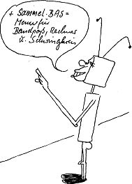

80-Bus Journal |
April/Mai/Juni 1984 · Ausgabe 2 |
sparen.
Die Diskette ist für DM 20.– (incl MWSt, Porto und Verpackung) erhältlich. Bestellung durch Überweisung auf unten stehendes Konto.
DISK1 Programme aus Heft 1/84 und Assembler-Programme, die wegen der Länge nicht abgedruckt werden konnten:
| GRAFIK.BAS | GRAFCOPY.ASS |
| REABIN.ASS | MONITOM.ASS |
| BREAKOUT.ASS | PACMAN.NAS |
| PACMAN.ASS | PACGRAF.ASS |
| PACMAN.DOC | VIERECK.ASS |
| MAEDCHEN.NAS | T4DRIVER.ASS |
| VIERECK.DOC | READIN.NAS |
| TEXTCASS.ASS | TOOLMOM.NAS |
ca.120 KBytes, deren Abtippen Sie sich sparen können. DISK1 können Sie durch Überweisung von DM 15.– auf untenstehendes Konto erhalten.
Disk2
Inhalt dieser Ausgabe.
(+ vollständiges PHEAS V 2.5 und Adreßverwaltung V 5.3)
| BEZIER.BAS |  |
| PRNTGRAF.ASS | |
| SINUS.BAS | |
| RECHNER.BAS | |
| SCHWING.BAS | |
| PHEAS25.ASS | |
| FILTER.BAS | |
| SPRITE.NAS | |
| SPRITE.BAS | |
| ZAHLEN.BAS | |
| STERNE.PAS | |
| KANNIBAL.BAS | |
| SPIELE2.BAS | |
| ADRVERW.ASS | |
| HEXDEZ.BAS | |
| USR(N).ASS |
Ob die Programme „Star Wars“ (Gürr) und „Postscheck“ (Mombaur) noch rechtzeitig übernommen werden können, ist zur Zeit der Drucklegung noch nicht sicher.
Auch Disk2 ist mit einer Überweisung von DM 15.– auf folgendes Konto zu bestellen:
______-___ Gabi Böhm PSchA ____
Wegen Systemaufgabe zu verkaufen
Nascom2 im original Pult- Metallgehäuse
Nassys1, BASIC, Assembler, Disassembler, Toolkit
PIO-Karte, RAM-Karte (32K), Netzteil komplett aufgebaut; alles
original NAS Teile; vorh. Software gratis dazu.
VB nur 1500 .–
Klaus Bott , __________. __
____ ___________ Tel. _____/_____
(abends _____/____)
Die Buszustandsanzeige wurde bereits in unserem Leserservice erwähnt. Es handelt sich hierbei um eine Europakarte (ECB-BUS) mit 40 LEDs auf der Stirnseite, die den aktiven Zustand für folgende Signale anzeigen: D0- D7, A0- A19, Wait, BUSRQ, NMI, M1, RD, WR, MREQ, IORQ, BUSAK, RFSH, HALT. Die Anzeige ist abschaltbar.
Der darauf folgende Schaltplan bezieht sich auf die Erweiterungskarte. Der Bestückungsplan wird im nächsten Heft nachgeliefert.
Es handelt sich dabei um eine Schaltung, die mittels Taste einen hardwaremäßigen NMI und einen M1- getriggerten RESET wie Nascom2 erzeugt. Ein WAIT-Signal kann durch die Signale RD, WR, M1, MREQ, IORQ, BUSAK, RFSH oder INT erzeugt werden. Ebenso kann eine beliebige Kombination dieser Steuersignale dazu benutzt werden (durch 8 pol. Dil-Schalter einstellbar).
WAIT funktioniert wie im Nascom- Journal 10/81 Seite 5 und 6 beschrieben.
Ferner besitzt die Karte einen Taktgenerator, mit DIL-Schalter auf 1, 2, 4, 8 MHz einstellbar mit einem Fan-Out von 50 zur zentralen Taktversorgung. Risetime bei Belastung mit 16 Steckplätzen ca 10 ns. Der Takt ist abschaltbar, und es können dann einzelne T-Cycles zur CPU gegeben werden mit einer STEP- Taste.
Beide Karten könnten bei entsprechender Nachfrage als durchkontaktierte Serie hergestellt werden.
| Seite 6 von 52 |
|---|